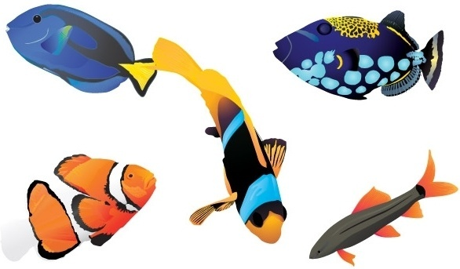

SO I got this response from asking for direction in the forum of GreenSock's site
And am ecstatic about the first days teaching's...
Thanks for responding btw Carl.
Theses are ALL the things I have been looking for and so much potential for unique ideas. I AM IN LOVE!!
Learning easing in gsap
I consider myself to be a transitioning developer
Transitioning from not believing in my ability to animate, to one who now believes that ANYTHING IS POSSIBLE!
c
I haven't yet put these animations on a timeline so refresh the page as you scroll down and it will start them over where you are on the page
ALL THIS BEGINNING TEXT WAS SIMPLY COPIED AND PLACED INTO TAGS WHICH I ADDED CLASSES TO
There are tons of tutorials and blog posts out there that explain how to make something move or spin with GSAP. It's not brain surgery. The GreenSock documentation is terrific and loaded with detailed explanations of specific features.
However, beginners can be left struggling to understand how to put it all together in real-world projects.
To get the most out of this course it is important to Set aside 20-30 minutes a day to learn Watch each video in it's entirety Take your own notes along the way
Type all the code I show you and experiment with different values
Build your own VERY SMALL projects
Hey, that's what THIS is!
You now have access to the first 5 lessons Our Development Environment GSAP Object: Tweens and Timelines Basic Tween from() and fromTo() Special
Properties: Delay and Repeat These lessons will walk you through loading GSAP and creating your first animations using GSAP's most popular methods.
These entry-level lessons are designed to gently guide you through the basic GSAP syntax that virtually everything you do with GSAP is based upon. I have some more important notes in the course Welcome chapter, so let's jump in...
This will document the journey through GSAP3 with CARL!! HERE WE GO!!!
To get the most out of this course it is important to Set aside 20-30 minutes a day to learn Watch each video in it's entirety Take your own notes along the way Type all the code I show you and experiment with different values Build your own VERY
SMALL projects Please resist the urge to fast-forward or just glance at the code in the demos.
"I spend a lot of time making sure the videos are short yet packed with the info you need. There are tons of tips in these videos that will help you get a better understanding of how everything works for these lessons and more advanced courses
to follow. Well now that that's out of the way... let's get going! ~Carl"
CONTENT RELEASE SCHEDULE
This course operates on a drip schedule. New content is released relative to your enrollment date. The pacing is designed to give you ample time to watch each video and do some light coding on your own. Enroll Day: Basics
Our Development Environment GSAP Object: Tweens and Timelines Basic Tween from() and fromTo() Special Properties: Delay and Repeat Enroll Day + 2: Basics continued Special Property: Ease Reading Ease Curves Special Property: Stagger Tween
Control Using GSAP Documentation Enroll Day + 4: Timelines Why Timelines are Important Basic Timeline Intro Position Parameter Visualizer Basic Timeline Position Timeline Control and Labels Enroll Day + 7: Final Project Project Setup Basic
Animation Timeline Defaults GSDevTools Tweak Timing Remove Flash of Un-styled Content (FOUC) Enroll Day + 14: Bonus Lessons Typewriter Effect + TextPlugin Getting Started with SplitText SplitText Word by Word SplitText Line by Line
NEXT-> First course!:
Enroll Day: Basics
Our Development Environment
GSAP Object: Tweens and Timelines
Basic Tween
from() and fromTo()
Special Properties: Delay and Repeat
Enroll Day + 2: Basics continued
Special Property: Ease
Reading Ease Curves
Special Property: Stagger
Tween Control
Using GSAP Documentation
Enroll Day + 4: Timelines
Why Timelines are Important
Basic Timeline Intro
Position Parameter Visualizer
Basic Timeline Position
Timeline Control and Labels
Enroll Day + 7: Final Project
Project Setup
Basic Animation
Timeline Defaults
GSDevTools
Tweak Timing
Remove Flash of Un-styled Content (FOUC)
Enroll Day + 14: Bonus Lessons
Typewriter Effect + TextPlugin
Getting Started with SplitText
SplitText Word by Word
SplitText Line by Line
OK, SO there is the run-down of this course and OFF I go!!
Setting Up Dev Environment
All of our work in this course will be done in CodePen as explained in the previous lesson. When working locally, the easiest way to load in GSAP is through a The download zip contains a sample file that shows you how to load GSAP locally via
a script tag.
If you use more complex build systems definitely check out the GSAP Installation Guide.
For all the lessons there are light notes and instructions supplied with the videos, but I encourage you to take your own notes too!
Happy Animating,
Carl
Basic Tween
For the best perfomrmance animate CSS Transforms And opacity
x and y
rotation, rotationX, rotationY (gsap is great at 3D)
scaleX, scaleY, or just scale
skewX, skewY
GSAP can animate any numeric property you throw at it.
1 width and height
2 backgroundColor *hyphenated values need to be camelCase
3 color
4 padding
5 left and top (must set position to relative, absolute, or fixed)
6 vh and vw

This is my FIRST fromTo tween so I think this s a good place to stop,
Thank you Carl, I'll be seeing alot more of you.
OK, so a timeLine is a container for multiple tweens
Duration is 500 milliseconds or 1/2 a second in gsap so if a duration is not specified this is how long it will take gsap to excecute that animation inside of that tween.
I made an svg here so I can be working with every kind of img source in gsap animations
I am tired tonight but tomorrow is exciting, just going to put these final teachings in a tag or two and turn in.
Special Properties:
Delay and Repeat Special properties define how the animation should run and what it should do.
Special properties are not animated.
delay: how much time should transpire before animation begins
repeat: how many times the animation should repeat
yoyo: when set to true the animation will play back and forth
repeatDelay: how much time should transpire between each repeat An animation will repeat indefinitely if you set repeat:-1
That's why All these h1s are annoying you like this!!!